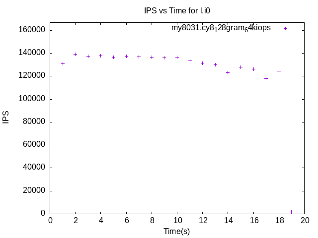
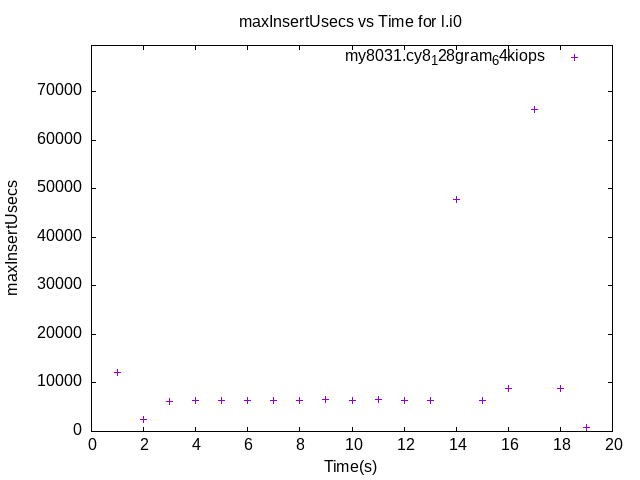
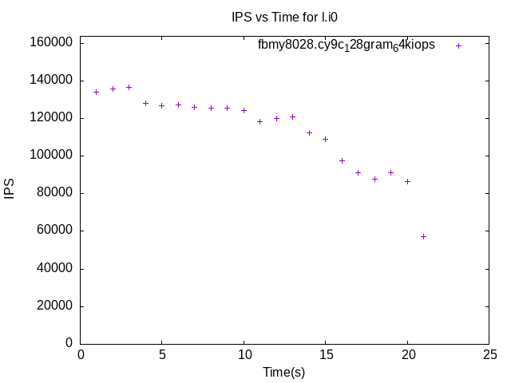
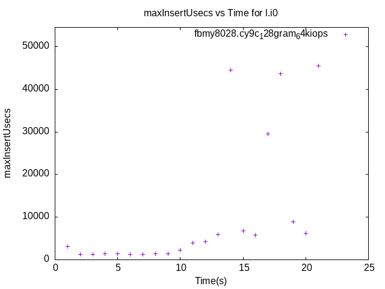
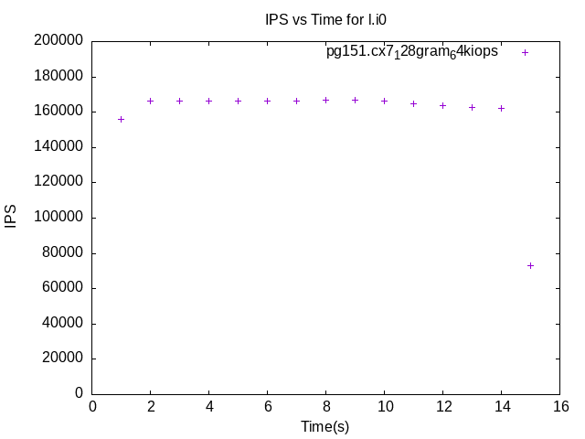
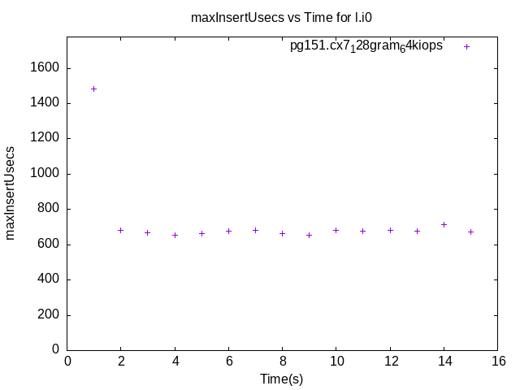

These have results per 1-second interval for: insert rate (IPS) and max insert reponse time.
The results are from 1 client while the test may have N clients where N > 1.
Contents
my8031.cy8_128gram_64kiops: IPS
my8031.cy8_128gram_64kiops
my8031.cy8_128gram_64kiops: max insert response time
my8031.cy8_128gram_64kiops
fbmy8028.cy9c_128gram_64kiops: IPS
fbmy8028.cy9c_128gram_64kiops
fbmy8028.cy9c_128gram_64kiops: max insert response time
fbmy8028.cy9c_128gram_64kiops
pg151.cx7_128gram_64kiops: IPS
pg151.cx7_128gram_64kiops
pg151.cx7_128gram_64kiops: max insert response time
pg151.cx7_128gram_64kiops